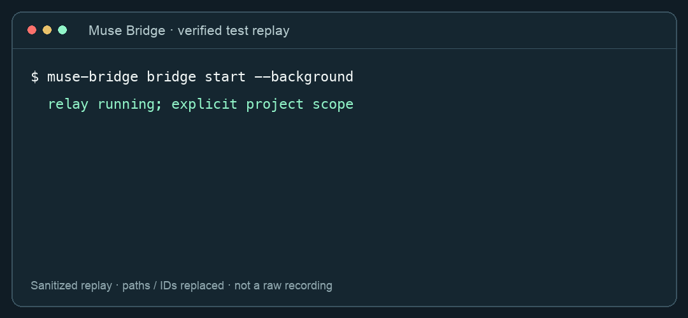

Open source · macOS · Python 3.11+
Your Muse agent.
Your local coding tools.
A Muse CLI that connects your muse.ai personal agent to Codex and Claude Code on your Mac — and brings the result back to the same chat.
Independent project. Not the official Muse Code CLI; not affiliated with Meta, OpenAI or Anthropic. Internal Muse APIs are experimental.
A real roundtrip
Muse requests a local task. Codex or Claude Code runs it. A structured result returns to Muse.
Explicit local scope
Authorize a project first. Read mode is the default; editing requires a separate opt-in.
No public ports
The Mac makes outbound requests. Muse login stays in Keychain. MCP tools remain read-only.
See the workflow
Muse → your Mac → Codex / Claude Code → Muse

Replay of verified tests, with paths and IDs replaced. Not an unedited screen recording. Evidence and limitations.
Start with a read-only project
uv tool install https://github.com/buzhidaosm/muse-cli-bridge/releases/download/v0.3.0/muse_bridge_cli-0.3.0-py3-none-any.whl
muse-bridge login
muse-bridge identity
muse-bridge bridge init --project /absolute/path/to/project
muse-bridge bridge start --background
muse-bridge bridge notifyIn the Muse chat that receives onboarding: “Use Codex to review this project through Muse Bridge. Don't change files. Wait for the local result.”
What does this Muse CLI support?
Read identity, threads, history, goals, ideas and feed; send explicit messages; expose seven read-only MCP tools; and run bounded local tasks through Codex or Claude Code. The Mac must remain awake, connected and running the relay.
Is this the official Muse Code CLI?
No. Muse Bridge connects the muse.ai personal agent to local tools. It does not replace an official model harness and does not claim official integration status.
Can Muse control my desktop?
This version launches CLI tasks in explicitly authorized projects. It does not click screens or inject messages into an existing desktop conversation.
Are task agents fully isolated?
No. The OS boundary limits writes; it is not complete read or network isolation. Runtime directories are also writable. Do not use this bridge for credentials or sensitive workflows. Read the precise boundary.
What was independently verified?
Both Muse-to-agent roundtrips were found in actual Muse history, and both agents edited disposable projects whose final file contents were separately checked. Tests also cover permissions, deduplication, deadlines and failure states. Compatibility is account- and version-specific.
Help make it better
Useful contributions are redacted compatibility reports, reproducible tests and onboarding improvements. If the project helps you, a GitHub star helps other developers find it.